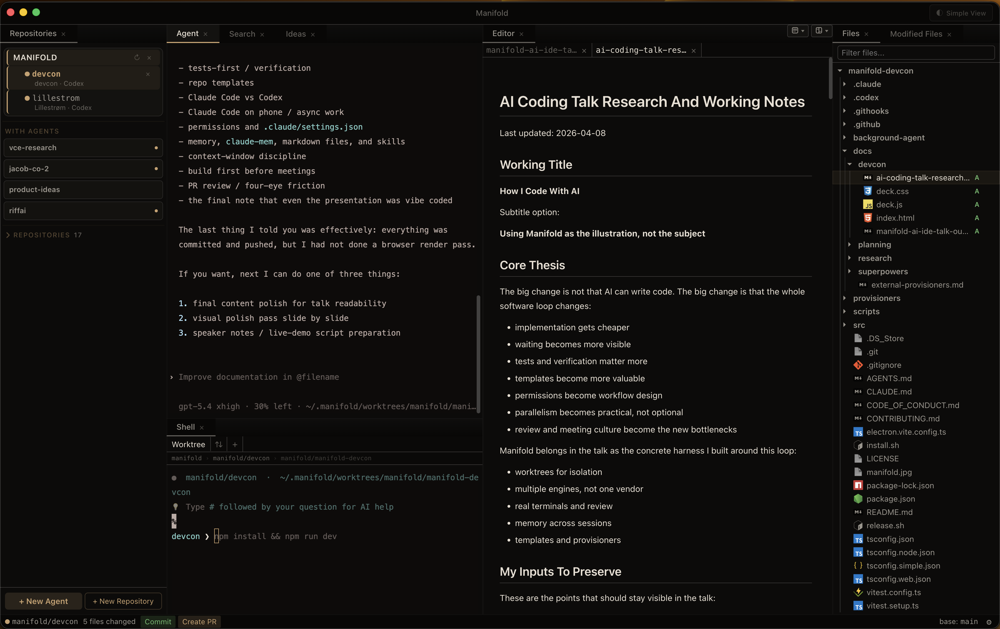
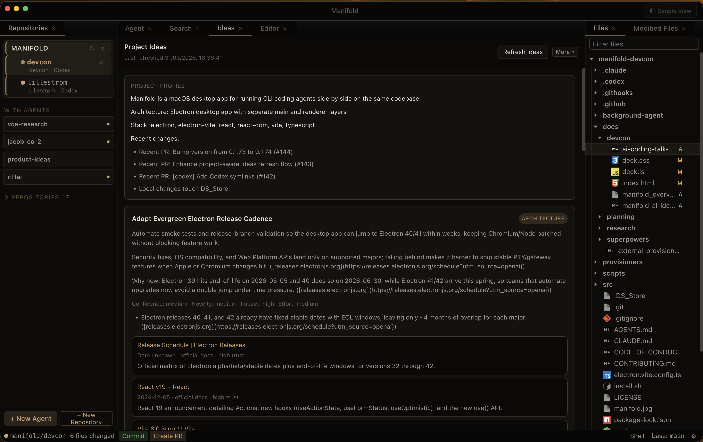

Typing became cheaper
Agents can now draft, refactor, and scaffold faster than the old manual loop.
Manifold is the toolkit I built to solve these problems, but the real story is how agentic coding changes what matters.
AI made implementation cheaper. The hard parts now are orchestration, verification, permissions, and deciding what is worth building next.
Why AI coding moved the problem from typing to orchestration, verification, and waiting.
Worktrees, your own IDE, and why the toolkit matters more than the chat box.
The repeatable loop, why tests-first matters, how to keep the context window on track, and how permissions affect velocity.
How I use both tools, and why phone, web, and durable memory change the rhythm of coding.
Repo templates, building before meetings, and the recurring question of what to build next.
Why merge friction still matters even when implementation accelerates.
Leave time for tradeoffs around tests, templates, permissions, tools, and review culture.
Agents can now draft, refactor, and scaffold faster than the old manual loop.
An agent response can take between 15 and 45 minutes, so serial work wastes time fast.
The hard parts are now scoping, verifying, steering, reviewing, and deciding what to build next.
`CLAUDE.md`, `AGENTS.md`, specs, and plans matter when they change agent behavior, not when they just restate obvious repo facts.
Approval prompts protect the machine, but a bad allowlist can quietly destroy flow.
Worktrees, sandboxes, and separate sessions make parallel AI work manageable.
Tests, diffs, templates, memory, markdown, and skills are what turn a model into a workflow.
Great when I want an interactive terminal partner that I can steer in real time.
Great when I want a task to run independently in the background and come back as a reviewable, issue-shaped unit.
Both tools benefit from structure, context, tests, and explicit success criteria.
The best question is not “which model is best?” It is “which operating mode fits this job?”
Start with a rough intent, not a vague request for magic.
Load only the relevant docs, files, markdown notes, and patterns first. More context is not always better.
Tell the agent your thoughts, then ask for its thoughts before coding.
Force the work into a markdown spec so the change becomes concrete and reusable.
If the task is non-trivial, get an implementation plan before edits start.
Let the agent implement the plan instead of improvising inside one long thread.
Run tests, commands, screenshots, or previews so the agent can check itself.
Use explicit rules like max LOC, smaller functions, better file boundaries, and start fresh if the session has drifted.
Anthropic explicitly calls self-verification the highest-leverage thing you can give the agent.
They let the model run, break, fix, and confirm without asking you to inspect every change manually.
Screenshots, previews, and visual diffs are part of tests-first development now.
Two repositories, multiple agents, shell, editor, and file tree visible in one workspace.

The real lesson is that AI work can now move while you are away from the keyboard. That changes the cadence of a normal engineering day.
Goal: remove boring approvals keep meaningful security checks Allow individually: npm test npm run typecheck git status git diff pnpm lint Still require approval: rm force-push production deploys Bad settings file: too many harmless prompts or not enough real protection
If a session gets cluttered or starts drifting, split the task or start fresh instead of arguing with stale context.
Agents lose context between sessions. Memory that persists across conversations prevents repeated explanation.
Put stable instructions into files and skills so the agent does not have to relearn the same rules every session.
choose templateclone structure + filesopen a ready repoIf the same annoyance appears weekly, it is a strong build candidate.
If a new project keeps beginning the same way, make it a template.
Build the tool, pane, or rule that makes the next ten tasks cheaper.
Project profile, ranked next bets, and source-backed reasoning in one place.

Speculation, interpretation gaps, and the loudest voice in the room.
A rough prototype, a working screen, or one real flow that people can react to.
Faster decisions because the team is now discussing something concrete.
Coding got faster. The systems around the model decide whether that speed becomes real leverage or just more waiting.
Agents can produce drafts, prototypes, and diffs much faster than before.
Agent run time, async work, and idle gaps are now part of the normal engineering loop.
Tests, previews, diffs, and review matter more because you can generate more change faster.
Permissions, templates, memory, markdown, skills, and task design are what make the speed usable.
If tasks take 15 to 45 minutes, parallel work and isolation become core workflow design.
The four-eye principle is useful, but required approvals, stale review resets, and large PRs still slow development.
Pick the bottleneck that annoys you most and turn it into a workflow you control.
Useful starting points if the room is quiet: